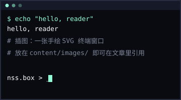

你好，世界：博客开张了
博客开张了。整站只有黑底、等宽字体和一种薄荷绿，像一台安静运行的老终端。

灵感来自 tmp.0ut —— 一个完全用 ASCII 字符排版的电子杂志。它证明了网页可以不要图片、不要圆角、不要渐变，只需要把字符摆在正确的位置上。
简单的东西最难做简单。
这个博客怎么运作
整个站点是一个零依赖的 Python 脚本 build.py 生成的静态 HTML：
- 每篇文章就是
content/posts/下的一个 Markdown 文件 - 文件名以日期开头，例如
2026-09-22-hello-world.md - front matter 里写标题、日期和标签
- 运行
python build.py，产物全部落在site/目录
没有数据库，没有npm，没有构建链依赖。删掉 site/ 重新 build，一切照旧。
为什么喜欢终端风格
终端是一切计算的原点。在图形界面铺天盖地的年代，一块黑底、几行等宽字符反而成了最诚实的信息展示方式：
- 没有装饰，注意力全部留给文字本身
- 纯文本天然可版本管理、可检索、可长期保存
- 盒子、点线、对齐，这些约束本身就是乐趣
接下来打算写写系统底层、逆向工程和工具链相关的东西。RSS 在导航里，欢迎订阅。
COMMENTS (2)
风格一眼爱了，盒子 logo 太有味道。蹲一个 ELF 系列长文！
双宽对齐确实舒服，archive 页的盒子强迫症狂喜。
问一个：手机上长代码块会横向滚动吗？